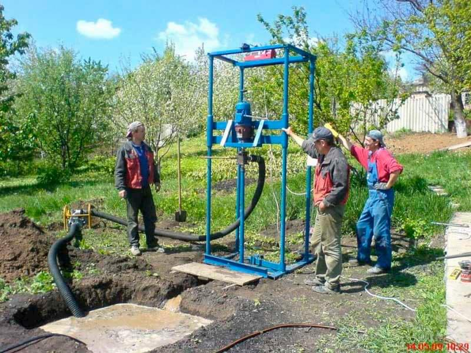

Зателефонуйте нам:
+38(096)-578-10-90Буріння та обслуговування свердловин на воду глибиною до 100м за 1 день
(У Волинській та Рівненській області)
Чим ми займаємось?

Бурінням свердловин на воду глибиною до 100м.

Муруванням приямків, вигрібних ям.
Обв'язуванням насосів.
Встановлюємо системи очистки води.

Проводимо водопостачання, опалення, каналізації.
Обслуговування свердловин.
Чому ми?
- У нас 15 років досвіду.
- Доступні ціни.
- Широкий спектр послуг.
- Гарантія на свердловину!
Використовуємо лише провірене обладнення
Обсадні труби відповідають стандартам для питної води.